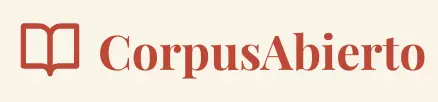

El autor frente a las ruinas del Templo de Apolo en Delfos, Grecia —un lugar que, aun en su estado fragmentario, conserva intacto el aura de sabiduría y misterio que lo caracterizó en la Antigüedad. Este santuario, enclavado en las laderas del monte Parnaso y considerado por los griegos como ὀμφᾰλός (omphalós, el ombligo del mundo), fue uno de los centros espirituales, religiosos y filosóficos más influyentes del mundo helénico.
En la fachada del templo, en el πρόναος (prónaos) o pórtico de entrada, justo antes de penetrar en el τὸ ἄδυτον (ádyton) —el espacio más sagrado del recinto, donde la Pitia, sacerdotisa de Apolo, pronunciaba sus oráculos enigmáticos— se hallaba inscrita una de las máximas más célebres de la Antigüedad: Γνῶθι σεαυτόν (Gnōthi seautón), que significa “Conócete a ti mismo”.
Sobre mí
Gracias por visitar mi sitio. Nací en Cuba y vivo en California. Soy maestro de profesión, con formación universitaria en filosofía y educación. Me intereso en la intersección de la tecnología con las Humanidades, y combino mi vocación pedagógica con una participación en iniciativas de Humanidades Digitales. En mi tiempo libre, colaboro en proyectos ciudadanos orientados a la filología computacional, la edición crítica, la historia y la promoción del acceso abierto a archivos digitales.
Desde una vocación pedagógica desarrollo proyectos de digitalización, transcripción y publicación en formatos abiertos de obras clásicas traducidas al español, como los Anales de Tácito (ed. Moralejo, Gredos 1979) y la Historia de la guerra del Peloponeso de Tucídides (trad. Torres Esbarranch, Gredos 1990). Estos trabajos implican una labor detallada de corrección y adaptación desde PDF, con el objetivo de preservar la fidelidad a la traducción original. Los resultados se publican, creo que por primera vez en la Web, como ediciones navegables y reutilizables, empleando herramientas como Pandoc, Python, Hugo, Markdown, Git, Visual Studio Code, TXM, entre otras.
Otro de mis intereses consiste en la traducción y difusión de recursos clave del inglés al español, con el fin de ampliar su accesibilidad en el ámbito hispanohablante. Entre estos recursos se encuentra el repositorio del Text Encoding Initiative (TEI), cuya documentación y herramientas resultan fundamentales para quienes trabajan en la preservación digital de textos. Recientemente he comenzado a estudiar los fundamentos de XML-TEI. También comienzo a traducir sus Directrices.
La traducción y la transcripción de textos enriquecen el aprendizaje propio, al mismo tiempo que contribuyen al mantenimiento, organización, portabilidad, preservación y difusión de obras clásicas y recursos digitales en español. Estas actividades no solo fomentan la difusión del conocimiento, sino que también promueven el acceso abierto a la cultura y la educación en general.
| Proyecto principal |
|---|
|  |
| Fotos |
|---|
|
|
| Contactarse |
|---|
|
|